General information
Distribution of sequence size (average)
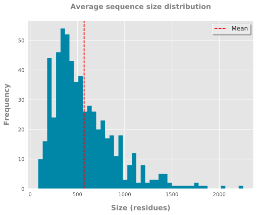
Distribution of sequence size (per species)
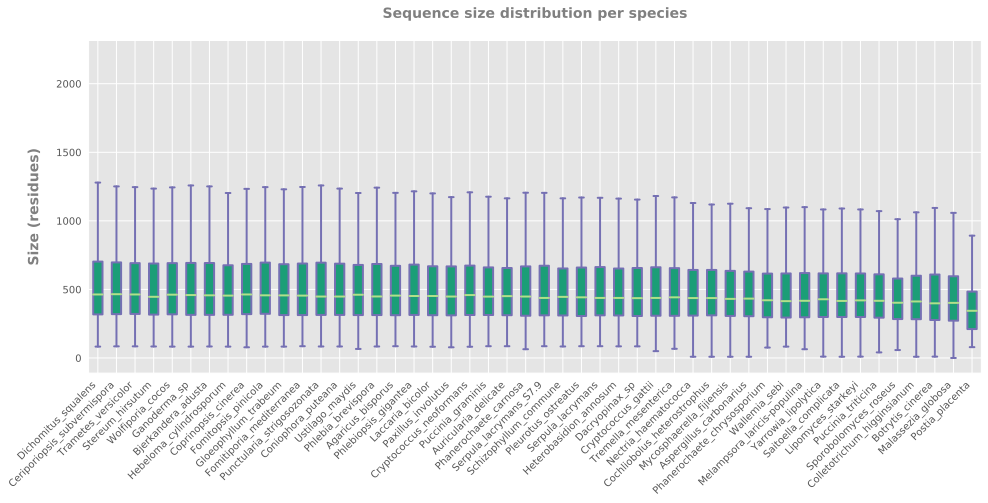
Proportion of nucleotides or residues (average)
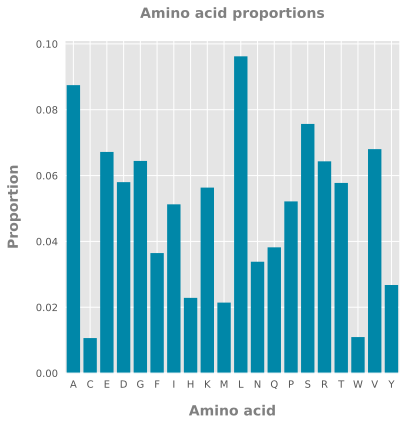
Proportion of residues (per species)
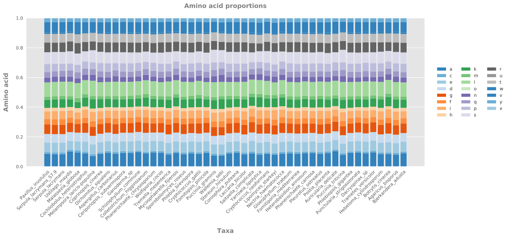
Proportion of nucleotides (per species)
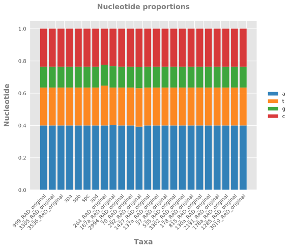
Distribution of taxa frequency
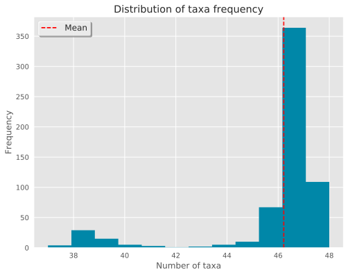
Polymorphism and variation
Pairwise sequence similarity (single gene)
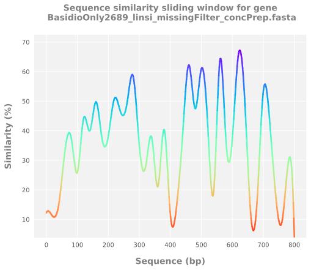
Pairwise sequence similarity (average)
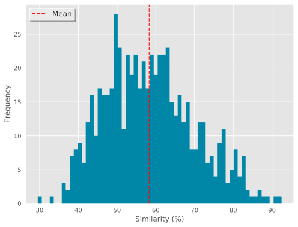
Pairwise sequence similarity (per species)
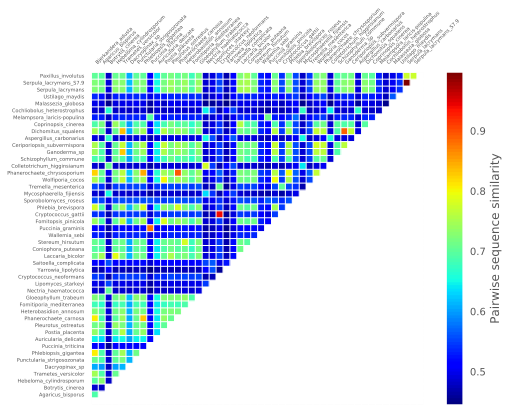
Segregating sites (single gene)

Segregating sites (average)

Segregating sites (per species)

Alignment length/polymorphism correlation
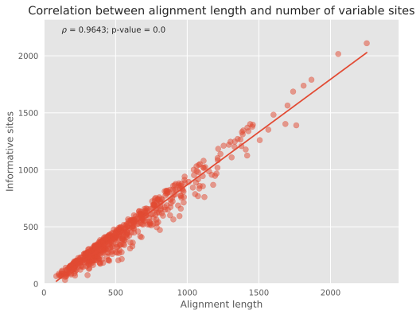
Allele frequency spectrum
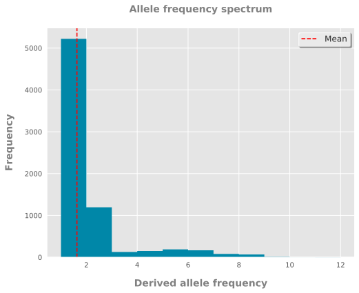
Missing data
Gene occupancy
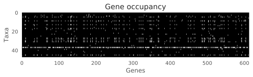
Distribution of missing taxa (average)
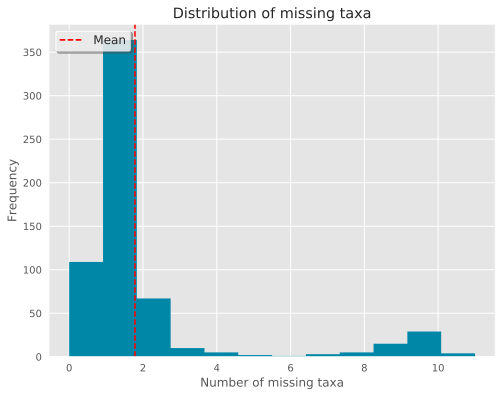
Distribution of missing genes (per species)
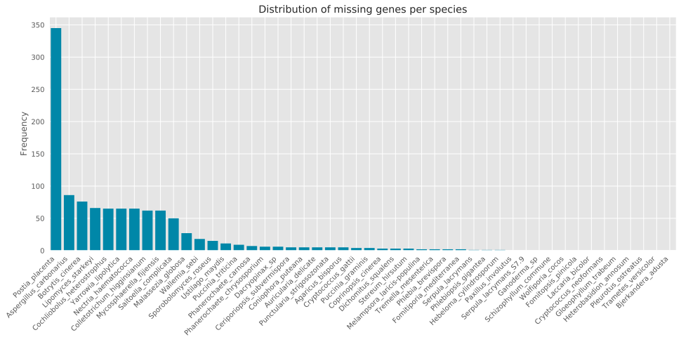
Distribution of missing data (average)
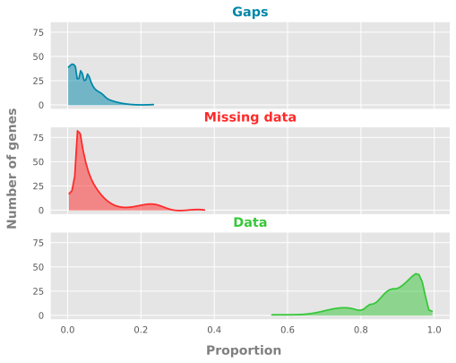
Distribution of missing data (per species)
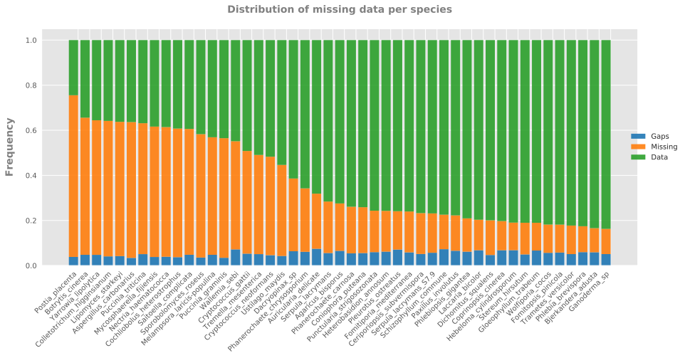
Cumulative frequency of missing genes
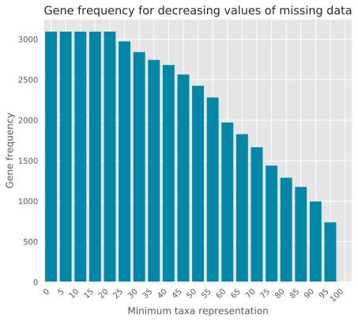
Outlier detection
Missing data outliers (average)
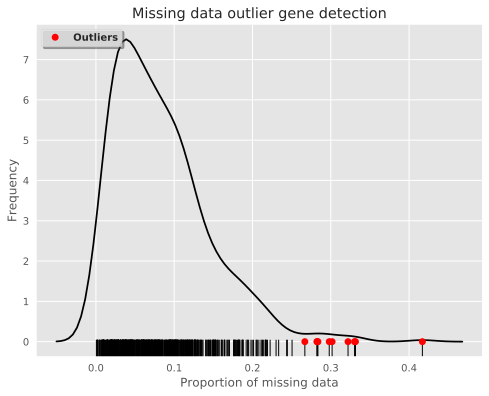
Missing data outliers (per species)
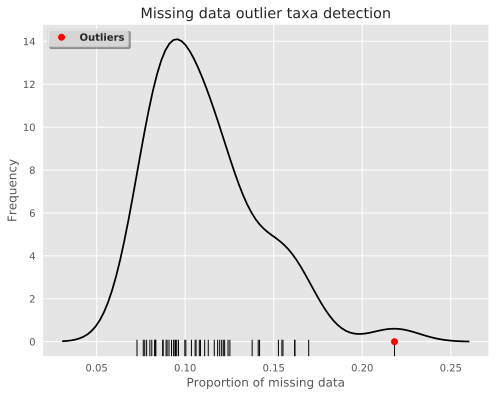
Segregating sites outliers (average)
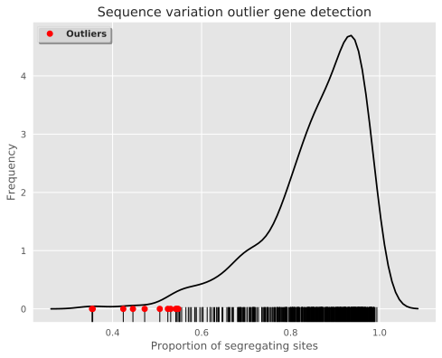
Segregating sites outliers (per species)
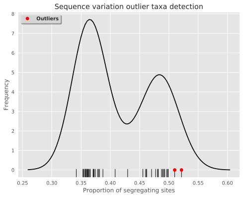
Sequence size outliers (average)
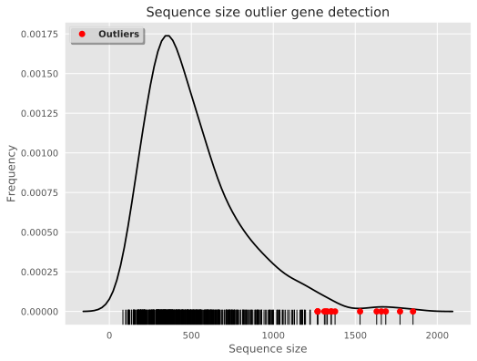
Sequence size outliers (per species)
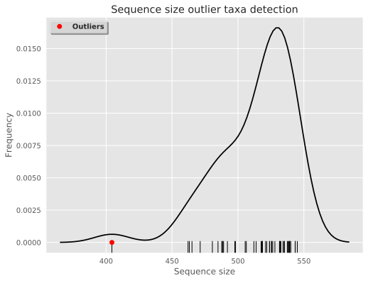